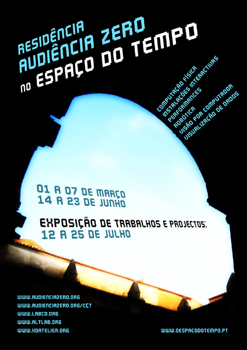
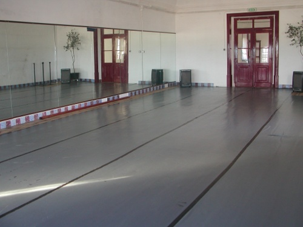
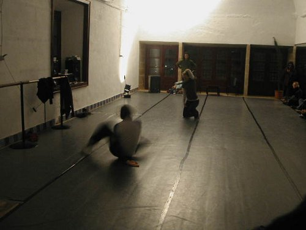

(scroll down for english)
A Audiência Zero vai realizar uma residência artística multidisciplinar com os seus três laboratórios (AltLab, LCD, xDA) no O Espaço do Tempo (Montemor-o-Novo) no período entre 01 e 07 de Março e 14 e 23 de Junho. A apresentação dos trabalhos produzidos na residência será feita entre 12 e 25 de Julho. A residência é antes de mais destinada aos actuais membros dos laboratórios, mas está prevista a participação de elementos externos no caso destes apresentarem propostas de trabalho consistentes e interessantes. Mais informações e inscrições no fim desta página…

Os interessados na residência devem manifestar o seu interesse e inscreverem-se com a maior brevidade possível (fim da página) para garantir lugar. A organização entrará em contacto para dar seguimento à inscrição.
Quando solicitados pela organização os participantes devem indicar se têm um projecto em mente para desenvolver ou actividade a propor. Quanto mais claros forem os projectos e as actividades, assim como os pápeis a desempenhar por cada um dos elementos das equipas constituídas ou a constituir, maior é a probalidade da actividade ou projecto de ser integrada na residência.
As vagas na residência estão limitadas a 15, com direito a alojamento e uma refeição diária. No caso de existirem mais do que 15 participantes ter-se‑á que escolher os projectos mais interessantes respeitando os seguintes critérios de selecção: criatividade, tecnologias envolvidas, viabilidade e tempo.
Após o periodo de inscrições, serão avaliados as aplicações pelos organizadores e definidos os artistas residentes. Iniciaremos a discussão dos projectos / actividades e definição da temática.
Exemplos Actividades:
. Workshops
. Palestras
. Demonstrações
Exemplos de Áreas de Projecto:
. Electrónica e Computação Física
. Instalações Interactivas
. Performance
. Robótica
. Visão por Computador
. Visualização de Dados
—-
Audiência Zero will hold a multidisciplinary artist residency with its three laboratories (altlab, LCD, xDA) in O Espaço do Tempo (Montemor-o-Novo) in the period between 01 and 07 March and 14 and 23 June. The projects produced will be shown between 12 and 25 July. The residence is primarily intended for the current members of this laboratories, but participation of external elements is accepted where proposals are consistent and interesting. More information and registration at the end of this page …
Those interested in residence should express their interest and enroll as soon as possible (end of page) to secure a place. The organization will contact you to follow up the application.
When asked by the organization participants must indicate whether they have a project in mind to develop or an activity to propose. The clearer the projects and activities, as well as the roles played by each element of a team, the greater the likelihood of the activity or project to be integrated into the residence.
Vacancies in the residence are limited to 15, with the right accommodation and a daily meal. If there are more than 15 participants, the organization we’ll have to choose the most interesting projects addressing the following selection criteria: creativity, technologies involved, feasibility and time.
After the registration period, applications will be assessed by the organizers and established resident artists. We will begin the discussion of projects / activities and define the residency theme.
Sample Activities:
. Workshops
. Lectures
. Demos
Project theme examples:
. Electronics and Physical Computing
. Interactive Installations
. Performance
. Robotics
. Computer Vision
. Data Visualization


Organização: Guilherme Martins, Ricardo Lobo e Tiago Serra.
http://www.altlab.org
http://www.labcd.org
http://www.xdatelier.org
http://www.oespacodotempo.pt
Residência AZ no Espaço do Tempo
1ª Edição
Formador: Audiência Zero
Coordenador: Audiência Zero
Datas: 1 a 7 Março; 14 a 23 Junho; 12 a 25 Julho
Horário: Todo Dia
Local: O Espaço do Tempo (Montemor-o-Novo)
Preço: 0 euros
Estado: Abertas as Inscrições
Pedido de Informações
Ficha de Inscrição